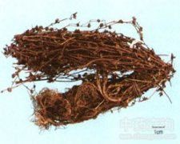

地耳草

拼音
Dì ěr Cǎo
别名
田基黄、田基王、小田基黄、黄花草、黄花仔、对叶草、七寸金、细叶黄
来源
为金丝桃科金丝桃属植物地耳草Hypericum japonicum Thunb.以全草入药。春夏采收全草，鲜用或洗净，晒干，切碎用。
生境分布
生于山野及较潮湿的地方。分布江苏、浙江、福建、湖南、江西、四川、云南、贵州、广东、广西等地。产广东、广西、四川、湖南、福建、江西等地。
药材特点
一年生草本，高15～40厘米，无毛。根多须状。茎直立，或倾斜，细瘦，有4棱，节明显，基部近节处生细根。单叶，短小，对生，多少抱茎，叶片卵形，长4～15毫米，全缘；先端钝，叶面有微细的透明点。聚伞花序顶生，成叉状而疏，花小，黄色；萼片5，披针形；花瓣5，长椭圆形，内曲，几与萼片等长；雄蕊10个以上，基部连合成3束；子房1室，花柱3枚。蒴果长圆形，长约4毫米，外面包围有等长的宿萼。花期5～6月。
性状
干燥全草，茎略呈四棱柱状，光滑，粗约1.5毫米，外表淡黄棕色或暗红棕色，节间长约1～2厘米，易折断。叶片黄褐色或灰青色，皱缩，纸质，易碎，以放大镜观之，有细小透明油点。花序多折断而不完整，花萼花瓣干缩，黄棕色，或脱落，雄蕊仅存花丝，子房甚小，易脱落。蒴果红棕色，长卵形，多裂成3瓣，顶端喙尖；种子细小，多数；不成熟的果实，尚残存破碎的花萼、花瓣及少数花蕊。气微，味淡。
性味
甘、微苦，凉。
功能主治
清热利湿，解毒消肿，散瘀止痛。用于肝炎，早期肝硬化，阑尾炎，眼结膜炎，扁桃体炎；外用治疮疖肿毒，带状疱疹，毒蛇咬伤，跌打损伤。
用法用量
鲜用1～2两，干用0.5～1两；外用适量，鲜品捣烂敷患处。
化学成分
含黄酮类、内酯（香豆精）、鞣质、蒽醌、氨基酸、酚类。
药理作用
1：无药理作用数据
摘录
《全国中草药汇编》